library(tidyverse)
library(patchwork)
library(brms)14 Stan
Stan is the name of a software package that creates representative samples of parameter values from a posterior distribution for complex hierarchical models, analogous to JAGS…
According to the Stan reference manual, Stan is named after Stanislaw Ulam (1909–1984), who was a pioneer of Monte Carlo methods. (Stan is not named after the slang term referring to an overenthusiastic or psychotic fanatic, formed by a combination of the words “stalker” and “fan.”) The name of the software package has also been unpacked as the acronym, Sampling Through Adaptive Neighborhoods (Gelman et al., 2013, p. 307), but it is usually written as Stan not STAN.
Stan uses a different method than JAGS for generating Monte Carlo steps. The method is called Hamiltonian Monte Carlo (HMC). HMC can be more effective than the various samplers in JAGS and BUGS, especially for large complex models. Moreover, Stan operates with compiled C++ and allows greater programming flexibility, which again is especially useful for unusual or complex models. For large data sets or complex models, Stan can provide solutions when JAGS (or BUGS) takes too long or fails. (pp. 399–400, emphasis in the original)
To learn more about Stan from the Stan team themselves, check out the main website: https://mc-stan.org/. If you like to dive deep, bookmark the Stan user’s guide (Stan Development Team, 2022b) and the Stan reference manual (Stan Development Team, 2022a).
We won’t typically use Stan directly in this ebook. I prefer working with it indirectly through the interface of Bürkner’s brms package instead. If you haven’t already, bookmark the brms GitHub repository, CRAN page, and reference manual (Bürkner, 2022a). You can also view Bürkner’s talk from the useR! International R User 2017 Conference, brms: Bayesian multilevel models using Stan. Here’s how Bürkner described brms in its GitHub repo:
The brms package provides an interface to fit Bayesian generalized (non-)linear multivariate multilevel models using Stan, which is a C++ package for performing full Bayesian inference (see http://mc-stan.org/). The formula syntax is very similar to that of the package lme4 to provide a familiar and simple interface for performing regression analyses. A wide range of response distributions are supported, allowing users to fit – among others – linear, robust linear, count data, survival, response times, ordinal, zero-inflated, and even self-defined mixture models all in a multilevel context. Further modeling options include non-linear and smooth terms, auto-correlation structures, censored data, missing value imputation, and quite a few more. In addition, all parameters of the response distribution can be predicted in order to perform distributional regression. Multivariate models (i.e., models with multiple response variables) can be fit, as well. Prior specifications are flexible and explicitly encourage users to apply prior distributions that actually reflect their beliefs. Model fit can easily be assessed and compared with posterior predictive checks, cross-validation, and Bayes factors. (emphasis in the original)
14.1 HMC sampling
“Stan generates random representative samples from a posterior distribution by using a variation of the Metropolis algorithm called HMC” (p. 400).
The code required to remake our versions of Figures 14.1 through 14.3 is somewhat intense. So unlike in the text, I am going to break this up into subsections, one for each of the figures. The code for Figure 14.1 will set the foundation, so we’ll spend more time in that section than in the other two.
14.1.1 Figures 14.1
Let’s start off by loading our primary packages.
At the top of page 401, we read:
HMC instead uses a proposal distribution that changes depending on the current position. HMC figures out the direction in which the posterior distribution increases, called its gradient, and warps the proposal distribution toward the gradient.
Say we’re in the special case where we have a single parameter \(\theta\), the posterior distribution for which is Gaussian. We can depict the current position of our HMC chain with a simple data frame with values for the parameter space theta and their corresponding density values computed with dnorm().
d <- tibble(theta = seq(from = -3.3, to = 3.3, by = 0.05)) |>
# The example in Figure 14.1 is a standard normal distribution
mutate(density = dnorm(theta, mean = 0, sd = 1))
glimpse(d)Rows: 133
Columns: 2
$ theta <dbl> -3.30, -3.25, -3.20, -3.15, -3.10, -3.05, -3.00, -2.95, -2.90, -2.85, -2.80, -2.75, -2.70, -2.65, -2.60, -2.55, …
$ density <dbl> 0.001722569, 0.002029048, 0.002384088, 0.002794258, 0.003266819, 0.003809762, 0.004431848, 0.005142641, 0.005952…Now we make a density plot with geom_area(), much we have many times before, and we’ll mark off the current position of our HMC chain with an annotated dot.
# Update the default `theme()` settings
theme_set(
theme_grey() +
theme(panel.grid = element_blank())
)
# Mark the current position
cur_pos <- -0.5
# Save the plot
p1 <- d |>
ggplot(aes(x = theta, y = density)) +
geom_area(fill = "grey67") +
annotate(geom = "point",
x = cur_pos, y = 0,
size = 3.5) +
annotate(geom = "text",
x = cur_pos, y = 0,
label = "current posotion",
size = 2.75, vjust = -1.5) +
scale_x_continuous(NULL, breaks = NULL) +
coord_cartesian(xlim = c(-3, 3)) +
facet_wrap(~ "Posterior")
# Display the plot
p1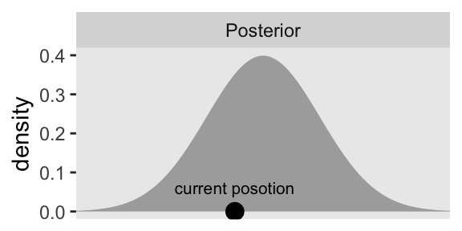
For the plots in this chapter, we’ll keep things simple and rely on the ggplot2 defaults with one exception: we omitted those unnecessary white gridlines with the theme_set() argument at the top of that block. You can undo that by executing theme_set(ggplot2::theme_grey()).
Further down on page 401, we read:
HMC generates a proposal by analogy to rolling a marble on the posterior distribution turned upside down. The second row of Figure 14.1 illustrates the upside-down posterior distribution. Mathematically, the upside-down posterior is the negative logarithm of the posterior density, and it is called the “potential” function.
Here we’ll practice computing the negative logarithm of our posterior density two ways. First, we’ll use the - and log() operators to transform the density values in our d data frame, which works perfectly fine. However, if your goal was to compute a Gaussian density on the log scale, you could also just set log = TRUE within the dnorm() function, and then take the negative of those values.
d <- d |>
mutate(neg_log_density = -log(density),
neg_log_density2 = -dnorm(theta, mean = 0, sd = 1, log = TRUE))
# Confirm they are the same
all.equal(
d$neg_log_density,
d$neg_log_density2)[1] TRUETo make the horizontal line with the arrows in the plot, we’ll want to add a p_sd vector with a constant value of 1.
d <- d |>
mutate(p_sd = 1)Here’s how we might make the second panel of the left columns in Figure 14.1.
p2 <- d |>
ggplot(aes(x = theta, y = neg_log_density)) +
geom_area(fill = "grey67") +
geom_point(data = d |>
filter(near(theta, cur_pos)),
size = 3.5) +
geom_line(data = d |>
filter(near(theta, cur_pos)) |>
expand_grid(row = 1:2) |>
mutate(theta = theta + c(-1, 1) * 0.65 * p_sd),
arrow = arrow(length = unit(0.075, "inches"), ends = "both"),
linewidth = 0.5) +
geom_text(data = d |>
filter(near(theta, cur_pos)),
label = "random\ninitial\nmomentum",
size = 2.75, vjust = -0.3) +
scale_x_continuous(NULL, breaks = NULL) +
ylab("-log(density)") +
coord_cartesian(xlim = c(-3, 3)) +
facet_wrap(~ "Potential")
p2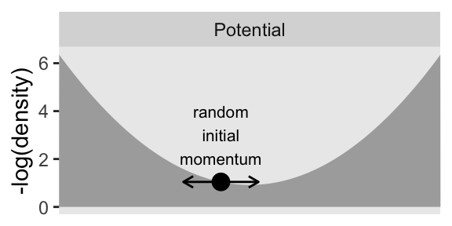
Note how we’ve continued to use geom_area() to fill in the negative log of the density, which gives an appearance of a valley or a skateboard halfpipe. Further down the same paragraph on p. 401:
The large dot, that represents the current position, is resting on the potential function like a marble waiting to roll downhill. The proposed next position is generated by flicking the marble in a random direction and letting it roll around for a certain duration.
Hopefully this helps clarify why HMC is often described as a physics simulation.
The panels in the bottom two rows of Figure 14.1 require a custom function we’ll call propose_hmc()
propose_hmc <- function(seed = 14,
epsilon = 0.1,
l = 1,
cur_pos = -0.5,
p_sd = 1) {
# epsilon: step size
# l: the number of leapfrog steps
# cur_pos: the initial value (i.e., current position) for the posterior of theta
# p_sd: the standard deviation of the momentum distribution
# Gradient of energy for a univariate Gaussian posterior
gradient <- function(x, mean = 0, sd = 1) {
(x - mean) / sd
}
# Random flick (p is momentum)
set.seed(seed)
p <- rnorm(n = 1, mean = 0, sd = p_sd)
# Define and initialize the proposal vector
proposal_vector <- rep(NA, times = l + 1)
proposal_vector[1] <- cur_pos
# Alternate steps for position and momentum
for (i in 1:l) {
# Half step in p
p <- p - epsilon * gradient(cur_pos) / 2
# Half step in theta based in the half step in p
cur_pos <- cur_pos + epsilon * p # Full step for the position
proposal_vector[i + 1] <- cur_pos
# Another half step in p
p <- p - epsilon * gradient(cur_pos) / 2
}
# Save the primary output in a tibble
d <- tibble(step = 0:l,
proposal = proposal_vector)
d
}Here’s the default output for our propose_hmc().
propose_hmc()# A tibble: 2 × 2
step proposal
<int> <dbl>
1 0 -0.5
2 1 -0.564It’s important to understand that propose_hmc() is not a fully-functional home-made HMC sampler. Rather, propose_hmc() is designed to showcase the proposal stage in HMC, as Kruschke depicted in Figures 14.1 through 14.3.
The first argument in propose_hmc() is for the seed value placed into set.seed() right before the random flick is selected from rnorm(). That initial flick “imparts a random initial momentum to the ball” (p. 401). In the notation of HMC, that random momentum is often denoted \(\rho\) (Stan Development Team, 2022a), and in the code of the propose_hmc() function we’ve just simplified that as p. Note that since we’re sampling p from rnorm(), the value can be positive or negative, which means the magnitude of that momentum can be directed to the left (lower) or right (higher) of the initial value \(\theta_\text{current}\). Following that initial flick, the algorithm takes a number of discrete steps, each over some small time interval. That time interval per step is often denoted \(\epsilon\), which is what we mean by our second propose_hmc() argument epsilon. The number of steps (called “leapfrog steps”) is often called \(L\), which is the same as our third argument l. Thus be default, propose_hmc() takes one leapfrog step (l = 1) for a duration of 0.1 (epsilon = 0.1). The fourth argument cur_pos marks the current position in the HMC chain, \(\theta_\text{current}\), and we have set the default to -0.5 to match with the value in the left column of Kruschke’s Figure 14.1. Our fifth and final argument p_sd is the standard deviation of the zero-centered normal distribution from which we randomly generate the initial momentum flick \(\rho\). Though it might not be obvious in the text, that value is set to 1 for Figure 14.1.
Efficient HMC sampling depends on the values one chooses for parameters like our epsilon, l and p_sd, and determining which values are best for a given combination of data and model is no trivial task. This is the essence of what Kruschke tried to introduce in this section of the text. Before we’re ready to use propose_hmc() to make the next parts of Figure 14.1, let’s first experiment with different values for epsilon and l. In the text, Kruschke referred to each unique combination of epsilon and l depicted in Figure 14.1 as an impulse. Here we’ll make a data frame called d_proposal with 10 impulses, each with values of epsilon and l randomly selected from two independent lines of runif().
n_impulse <- 10
set.seed(1)
d_proposal <- tibble(
seed = 1:n_impulse,
epsilon = runif(n = n_impulse, min = 0.005, max = 0.195)) |>
mutate(l = runif(n = n_impulse, min = 5, max = 15) |> ceiling())
glimpse(d_proposal)Rows: 10
Columns: 3
$ seed <int> 1, 2, 3, 4, 5, 6, 7, 8, 9, 10
$ epsilon <dbl> 0.05544665, 0.07570354, 0.11384214, 0.17755948, 0.04331957, 0.17569404, 0.18448830, 0.13055158, 0.12453167, 0.01…
$ l <dbl> 8, 7, 12, 9, 13, 10, 13, 15, 9, 13Note how we’ve named impulse index seed so the values can play double duty in the code block, below. The epsilon values are randomly chosen from the uniform distribution of \([0.005, 0.195]\), which is the same as used in the text. For this initial example, we have also randomly selected the l values from an independent uniform distribution ranging from 5 to 15. As runif() is not restricted to integer values, we used the celing() function to round them up. Next, we feed those seed, epsilon, and l values into our propose_hmc() with help from the pmap() function.
d_proposal <- d_proposal |>
mutate(hmc = pmap(list(seed, epsilon, l), propose_hmc))
print(d_proposal)# A tibble: 10 × 4
seed epsilon l hmc
<int> <dbl> <dbl> <list>
1 1 0.0554 8 <tibble [9 × 2]>
2 2 0.0757 7 <tibble [8 × 2]>
3 3 0.114 12 <tibble [13 × 2]>
4 4 0.178 9 <tibble [10 × 2]>
5 5 0.0433 13 <tibble [14 × 2]>
6 6 0.176 10 <tibble [11 × 2]>
7 7 0.184 13 <tibble [14 × 2]>
8 8 0.131 15 <tibble [16 × 2]>
9 9 0.125 9 <tibble [10 × 2]>
10 10 0.0167 13 <tibble [14 × 2]>This returned a nested tibble. Each cell within the hmc column contains the output from propose_hmc(), which is a tibble of l + 1 rows and two columns (step and proposal). To get direct access to those values, we unnest().
d_proposal <- d_proposal |>
unnest(hmc)
head(d_proposal, n = 10)# A tibble: 10 × 5
seed epsilon l step proposal
<int> <dbl> <dbl> <int> <dbl>
1 1 0.0554 8 0 -0.5
2 1 0.0554 8 1 -0.534
3 1 0.0554 8 2 -0.566
4 1 0.0554 8 3 -0.597
5 1 0.0554 8 4 -0.626
6 1 0.0554 8 5 -0.652
7 1 0.0554 8 6 -0.677
8 1 0.0554 8 7 -0.700
9 1 0.0554 8 8 -0.721
10 2 0.0757 7 0 -0.5 Now we’re ready to plot these initial d_proposal in a variant of the plot in the third row of Kruschke’s Figure 14.1.
d_proposal |>
ggplot(aes(x = proposal, y = step * epsilon, group = seed)) +
geom_path(color = "grey50", linewidth = 1/2) +
geom_text(data = d_proposal |>
group_by(seed) |>
slice_max(step),
aes(label = seed),
size = 3, nudge_y = 0.07) +
annotate(geom = "point",
x = cur_pos, y = 0,
size = 3.5) +
coord_cartesian(xlim = c(-3, 3))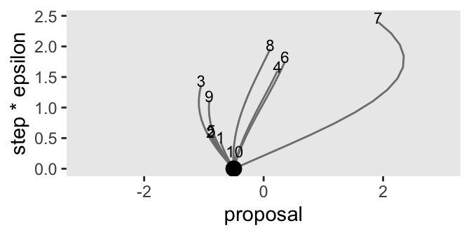
Note that the y axis is defined by the product of the step and epsilon columns, grouped by each impulse as indexed by the seed column. We’ll have more to say about the meaning of that axis in a bit. For now, notice the wide differences among our 10 impulse trajectories on the y axis. The shortest trajectory was number 10, which had 13 steps (l) but a very small epsilon value of 0.017. Although trajectory number 4 had a fewer leapfrog steps (9), its much larger epsilon value of 0.178 compensated to give it a mush longer trajectory. Thus when sampling by HMC, \(L\) and \(\epsilon\) values can counterbalance one another, and it might be wise to account for this when choosing them. When Kruschke made his simulations in the text, he actually sampled his \(L\) values as a non-linear function of \(\epsilon\). In the next code block, we’ll use Kruschke’s non-linear function in a new version of d_proposal. This time we’ll increase the number of random impulses to 1000.
# Increase the number of impulses
n_impulse <- 1000
# Simulate
set.seed(2)
d_proposal <- tibble(
seed = 1:n_impulse,
epsilon = runif(n = n_impulse, min = 0.005, max = 0.195)) |>
mutate(l = runif(n = n_impulse, min = 1 / epsilon, max = pi / (2 * epsilon)) |> ceiling())
# Plot
d_proposal |>
ggplot(aes(x = epsilon, y = l)) +
geom_point(size = 1/4)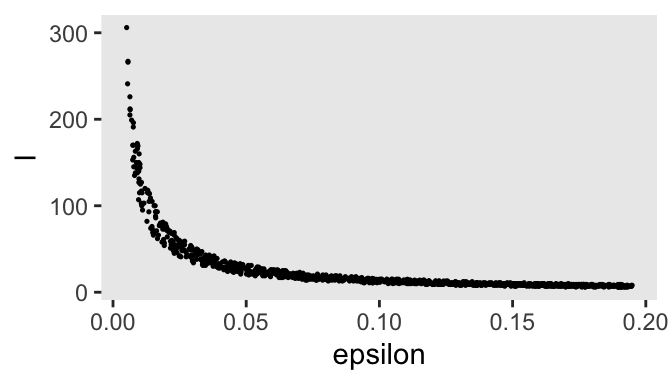
After updating our base d_proposal tibble, we used a scatter plot to show the dependency of the l values on epsilon. Now update d_proposal with the propose_hmc() function, via pmap().
d_proposal <- d_proposal |>
mutate(hmc = pmap(.l = list(seed, epsilon, l), .f = propose_hmc)) |>
unnest(hmc)
glimpse(d_proposal)Rows: 27,839
Columns: 5
$ seed <int> 1, 1, 1, 1, 1, 1, 1, 1, 1, 1, 1, 1, 1, 1, 1, 1, 1, 1, 1, 1, 1, 1, 1, 1, 1, 1, 1, 1, 1, 1, 1, 2, 2, 2, 2, 2, 2, …
$ epsilon <dbl> 0.04012763, 0.04012763, 0.04012763, 0.04012763, 0.04012763, 0.04012763, 0.04012763, 0.04012763, 0.04012763, 0.0…
$ l <dbl> 30, 30, 30, 30, 30, 30, 30, 30, 30, 30, 30, 30, 30, 30, 30, 30, 30, 30, 30, 30, 30, 30, 30, 30, 30, 30, 30, 30,…
$ step <int> 0, 1, 2, 3, 4, 5, 6, 7, 8, 9, 10, 11, 12, 13, 14, 15, 16, 17, 18, 19, 20, 21, 22, 23, 24, 25, 26, 27, 28, 29, 3…
$ proposal <dbl> -0.5000000, -0.5247355, -0.5486262, -0.5716334, -0.5937201, -0.6148508, -0.6349915, -0.6541096, -0.6721746, -0.…Finally, we’ll plot the first 100 iterations to make our version of the third panel of the left column for Figure 14.1.
p3 <- d_proposal |>
filter(seed <= 100) |>
ggplot(aes(x = proposal, y = step * epsilon, group = seed)) +
geom_path(alpha = 1/2, color = "grey50", linewidth = 1/4) +
geom_point(data = d_proposal |>
filter(seed <= 100) |>
group_by(seed) |>
slice_max(step),
size = 3/4) +
annotate(geom = "point",
x = cur_pos, y = 0,
size = 3.5) +
scale_x_continuous(NULL, breaks = NULL) +
coord_cartesian(xlim = c(-3, 3)) +
facet_wrap(~ "Hamiltonian Dynamics")
p3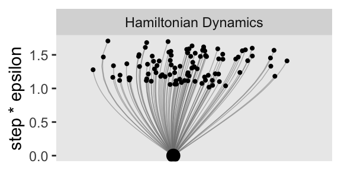
Notice that when you make the number of your leapfrog steps (l) depend on the step size (epsilon), the two balance each other out such that each trajectory has a similar length on the step * epsilon axis. Anyway, our y axis, which we’ve simply called step * epsilon is the same as what Kruschke called “Steps*Eps.” Toward the bottom of page 403, we read:
If the discrete steps of the trajectory are very small, then the approximation to the true continuous trajectory will be relatively good. But it will take many steps to go very far from the original position. Conversely, larger individual steps will make a poorer approximation to the continuous mathematics, but will take fewer steps to move far from the original position. Therefore, the proposal distribution can be “tuned” by adjusting the step size, called epsilon or “eps” for short, and by adjusting the number of steps. We think of the step size as the time it takes to make the step, therefore the total duration of the trajectory is the number of steps multiplied by the step size, or “Steps∗Eps” as displayed on the \(y\)-axis of the trajectories in Figure 14.1.
Rather than having to tinker with these settings ourselves, the algorithms in Stan tune the \(L\) and \(\epsilon\) values automatically during the warmup phase. But for the sake of pedagogy, we’ll continue using our hand computed \(L\) and \(\epsilon\) values for the remainder of this section.
You may have noticed that we only plotted the first 100 impulses in that last plot. We could have plotted more, that then we would have run into an overplotting issue. For this last plot for the left column of Figure 14.1, we’ll summarize the full distribution of all 1000 impulses.
p4 <- d_proposal |>
group_by(seed) |>
slice_max(step) |>
ggplot(aes(x = proposal, y = after_stat(density))) +
geom_histogram(binwidth = 1/3, boundary = 0, fill = "gray67") +
xlab(expression(theta)) +
coord_cartesian(xlim = c(-3, 3)) +
facet_wrap(~ "HMC Proposals")
p4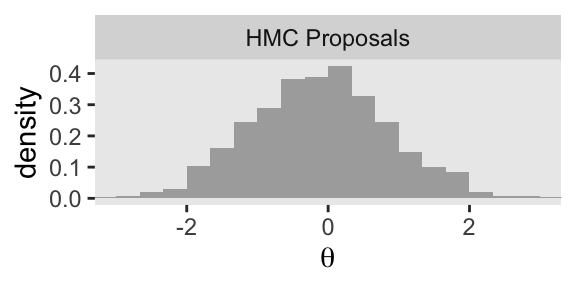
As we have been saving each of the four panels as separate objects, we can now combine them with patchwork syntax to make the full left column of Figure 14.1.
p1 / p2 / p3 / p4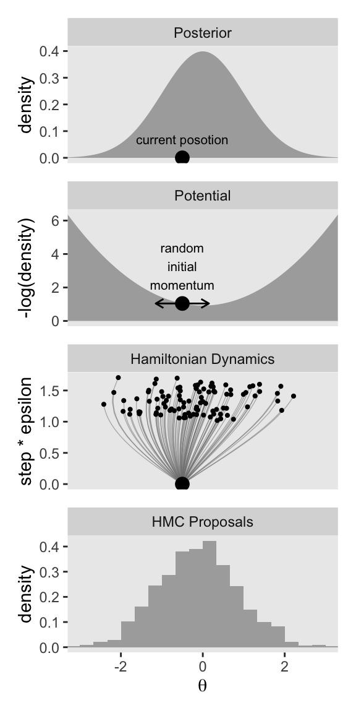
Now keep in mind that that plot in the bottom row is not of the posterior distribution. It’s a histogram of our 1000 proposals for our initial point in the HMC chain \(\theta_\text{current}\). We’ll talk more about that in a moment. For now, let’s make our version of the right column of Figure 14.1. This time, we’ll do all the steps in bulk. Notice that the only real difference is that rather than using \(\theta_\text{current} = -0.5\), we are switching to \(\theta_\text{current} = 2\).
# These data remain as before
d <- d
# Update to the new current position (theta[current])
cur_pos <- 2
# Simulate the HMC proposals
set.seed(2)
d_proposal <- tibble(
seed = 1:n_impulse,
epsilon = runif(n = n_impulse, min = 0.005, max = 0.195)) |>
mutate(l = runif(n = n_impulse, min = 1 / epsilon, max = pi / (2 * epsilon)) |> ceiling()) |>
mutate(hmc = pmap(.l = list(seed, epsilon, l),
# Change the default setting for `cur_pos`
.f = \(seed, epsilon, l) propose_hmc(seed = seed, epsilon = epsilon, l = l, cur_pos = 2))) |>
unnest(hmc)
# First row
p1 <- d |>
ggplot(aes(x = theta, y = density)) +
geom_area(fill = "grey67") +
annotate(geom = "point",
x = cur_pos, y = 0,
size = 3.5) +
annotate(geom = "text",
x = cur_pos, y = 0,
label = "current posotion",
size = 2.75, vjust = -1.5) +
scale_x_continuous(NULL, breaks = NULL) +
coord_cartesian(xlim = c(-3, 3)) +
facet_wrap(~ "Posterior")
# Second row
p2 <- d |>
ggplot(aes(x = theta, y = neg_log_density)) +
geom_area(fill = "grey67") +
geom_point(data = d |>
filter(near(theta, cur_pos)),
size = 3.5) +
geom_line(data = d |>
filter(near(theta, cur_pos)) |>
expand_grid(row = 1:2) |>
mutate(theta = theta + c(-1, 1) * 0.65 * p_sd),
arrow = arrow(length = unit(0.075, "inches"), ends = "both"),
linewidth = 0.5) +
geom_text(data = d |>
filter(near(theta, cur_pos)),
label = "random\ninitial\nmomentum",
size = 2.75, vjust = -0.3) +
scale_x_continuous(NULL, breaks = NULL) +
ylab("-log(density)") +
coord_cartesian(xlim = c(-3, 3)) +
facet_wrap(~ "Potential")
# Third row
p3 <- d_proposal |>
filter(seed <= 100) |>
ggplot(aes(x = proposal, y = step * epsilon, group = seed)) +
geom_path(alpha = 1/2, color = "grey50", linewidth = 1/4) +
geom_point(data = d_proposal |>
filter(seed <= 100) |>
group_by(seed) |>
slice_max(step),
size = 3/4) +
annotate(geom = "point",
x = cur_pos, y = 0,
size = 3.5) +
scale_x_continuous(NULL, breaks = NULL) +
coord_cartesian(xlim = c(-3, 3)) +
facet_wrap(~ "Hamiltonian Dynamics")
# Fourth row
p4 <- d_proposal |>
group_by(seed) |>
slice_max(step) |>
ggplot(aes(x = proposal, y = after_stat(density))) +
geom_histogram(binwidth = 1/3, boundary = 0, fill = "gray67") +
xlab(expression(theta)) +
coord_cartesian(xlim = c(-3, 3)) +
facet_wrap(~ "HMC Proposals")
# Combine and print
p1 / p2 / p3 / p4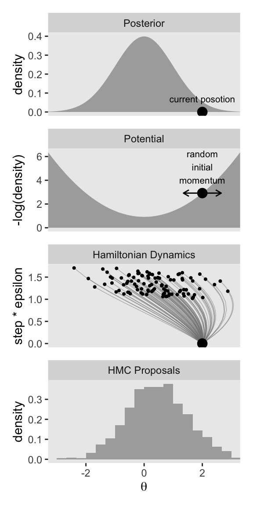
Keeping the results for these two columns in mind:
Notice that the proposal distributions are quite different for the different current positions. In both cases, however, the proposals are shifted toward the mode of the posterior distribution. You can imagine that for high-dimensional posterior distributions that have narrow diagonal valleys and even curved valleys, the dynamics of HMC will find proposed positions that are much more promising than a vanilla symmetric proposal distribution, and more promising than Gibbs sampling which can get stuck at diagonal walls. (p. 403, emphasis in the original)
14.1.2 Figure 14.2
The two columns in Figure 14.1 highlighted the difference the current position in the HMC chain \(\theta_\text{current}\) can make for the proposal distribution, all relative to the posterior distribution for \(\theta\). The simulations in each column held the range of randomly chosen \(\epsilon\) values constant, and also kept the non-linear function for the \(L\) values, relative to \(\epsilon\), constant too. You might think of the parameter settings of that non-linear function as as allowing for a narrow range of \(L\) values, relative to \(\epsilon\). In Figure 14.2, Kruschke showed what can happen of you alter the non-linear function to allow for a wide range \(L\) values, relative to \(\epsilon\). The current-position values for the two columns are the same as before: \(-0.5\) and \(2\). The uniform distribution from which we’ll draw the \(\epsilon\) values will be the same, too.
As a new little challenge, this time we’ll make the two columns in Figure 14.2 at the same time. To start, we might make the new version of the initial d data for the first two rows like so.
d <- tibble(theta = seq(from = -3.3, to = 3.3, by = 0.05)) |>
mutate(density = dnorm(theta, mean = 0, sd = 1),
neg_log_density = -dnorm(theta, mean = 0, sd = 1, log = TRUE)) |>
expand_grid(cur_pos = c(-0.5, 2)) |>
mutate(cur_pos_parse = str_c("theta[current]==", cur_pos),
p_sd = 1)
glimpse(d)Rows: 266
Columns: 6
$ theta <dbl> -3.30, -3.30, -3.25, -3.25, -3.20, -3.20, -3.15, -3.15, -3.10, -3.10, -3.05, -3.05, -3.00, -3.00, -2.95,…
$ density <dbl> 0.001722569, 0.001722569, 0.002029048, 0.002029048, 0.002384088, 0.002384088, 0.002794258, 0.002794258, …
$ neg_log_density <dbl> 6.363939, 6.363939, 6.200189, 6.200189, 6.038939, 6.038939, 5.880189, 5.880189, 5.723939, 5.723939, 5.57…
$ cur_pos <dbl> -0.5, 2.0, -0.5, 2.0, -0.5, 2.0, -0.5, 2.0, -0.5, 2.0, -0.5, 2.0, -0.5, 2.0, -0.5, 2.0, -0.5, 2.0, -0.5,…
$ cur_pos_parse <chr> "theta[current]==-0.5", "theta[current]==2", "theta[current]==-0.5", "theta[current]==2", "theta[current…
$ p_sd <dbl> 1, 1, 1, 1, 1, 1, 1, 1, 1, 1, 1, 1, 1, 1, 1, 1, 1, 1, 1, 1, 1, 1, 1, 1, 1, 1, 1, 1, 1, 1, 1, 1, 1, 1, 1,…The first three columns followed the same basic strategy we used before. In the expand_grid() line, we doubled the length of the data frame such that each of the original rows took on one of the two values for cur_pos, which will define the columns. The next line within mutate() defined a version of that cur_pos column, but with formatting that will parse nicely within facet_grid(). In the final line within mutate(), we added the constant value for p_sd to help with the double arrow in the plots in the second row.
Here’s how to use this version of the d data frame to make the two panels of the first row for Figure 14.2.
p1 <- d |>
ggplot(aes(x = theta, y = density)) +
geom_area(fill = "grey67") +
geom_point(data = d |>
filter(near(theta, cur_pos)),
y = 0, size = 3.5) +
scale_x_continuous(NULL, breaks = NULL) +
coord_cartesian(xlim = c(-3, 3)) +
facet_grid("Posterior" ~ cur_pos_parse,
labeller = labeller(.cols = label_parsed))
p1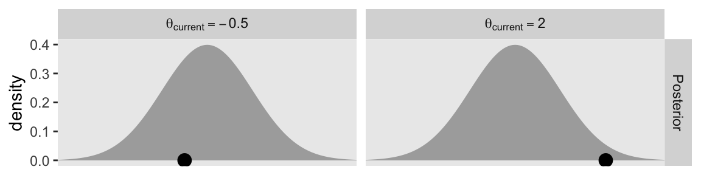
Here’s the second row.
p2 <- d |>
ggplot(aes(x = theta, y = neg_log_density)) +
geom_area(fill = "grey67") +
geom_point(data = d |>
filter(near(theta, cur_pos)),
size = 3.5) +
geom_line(data = d |>
filter(near(theta, cur_pos)) |>
expand_grid(row = 1:2) |>
mutate(theta = theta + c(-1, 1) * 0.65 * p_sd),
arrow = arrow(length = unit(0.075, "inches"), ends = "both"),
linewidth = 0.5) +
scale_x_continuous(NULL, breaks = NULL) +
ylab("-log(density)") +
coord_cartesian(xlim = c(-3, 3)) +
facet_grid("Potential" ~ cur_pos) +
theme(strip.text.x = element_blank())
p2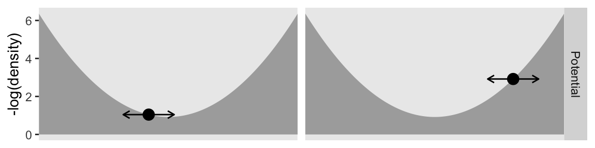
For the next two rows, we need a new version of d_proposal. Read through the annotation in the code to follow the new steps.
d_proposal <- tibble(seed = 1:n_impulse,
epsilon = runif(n = n_impulse, min = 0.005, max = 0.195)) |>
# The function in this line has changed
mutate(l = runif(n = n_impulse, min = 1, max = 2 * pi / epsilon) |> ceiling()) |>
# This step allows us to make both columns at once
expand_grid(cur_pos = c(-0.5, 2)) |>
# Notice we are now including `cur_pos` within the `propose_hmc()` function
mutate(hmc = pmap(.l = list(seed, epsilon, l, cur_pos), .f = propose_hmc)) |>
unnest(hmc)
glimpse(d_proposal)Rows: 116,792
Columns: 6
$ seed <int> 1, 1, 1, 1, 1, 1, 1, 1, 1, 1, 1, 1, 1, 1, 1, 1, 1, 1, 1, 1, 1, 1, 1, 1, 1, 1, 1, 1, 1, 1, 1, 1, 1, 1, 1, 1, 1, …
$ epsilon <dbl> 0.02664792, 0.02664792, 0.02664792, 0.02664792, 0.02664792, 0.02664792, 0.02664792, 0.02664792, 0.02664792, 0.0…
$ l <dbl> 154, 154, 154, 154, 154, 154, 154, 154, 154, 154, 154, 154, 154, 154, 154, 154, 154, 154, 154, 154, 154, 154, 1…
$ cur_pos <dbl> -0.5, -0.5, -0.5, -0.5, -0.5, -0.5, -0.5, -0.5, -0.5, -0.5, -0.5, -0.5, -0.5, -0.5, -0.5, -0.5, -0.5, -0.5, -0.…
$ step <int> 0, 1, 2, 3, 4, 5, 6, 7, 8, 9, 10, 11, 12, 13, 14, 15, 16, 17, 18, 19, 20, 21, 22, 23, 24, 25, 26, 27, 28, 29, 3…
$ proposal <dbl> -0.5000000, -0.5165162, -0.5326655, -0.5484367, -0.5638183, -0.5787996, -0.5933699, -0.6075188, -0.6212364, -0.…Now we can make the third row.
p3 <- d_proposal |>
filter(seed <= 100) |>
ggplot(aes(x = proposal, y = step * epsilon, group = seed)) +
geom_path(alpha = 1/2, color = "grey50", linewidth = 1/4) +
geom_point(data = d_proposal |>
filter(seed <= 100) |>
group_by(cur_pos, seed) |>
slice_max(step),
size = 3/4) +
geom_point(data = d_proposal |>
filter(seed <= 100) |>
group_by(cur_pos) |>
slice(1),
size = 3.5) +
scale_x_continuous(NULL, breaks = NULL) +
coord_cartesian(xlim = c(-3, 3)) +
facet_grid("Hamiltonian Dyn." ~ cur_pos) +
theme(strip.text.x = element_blank())
p3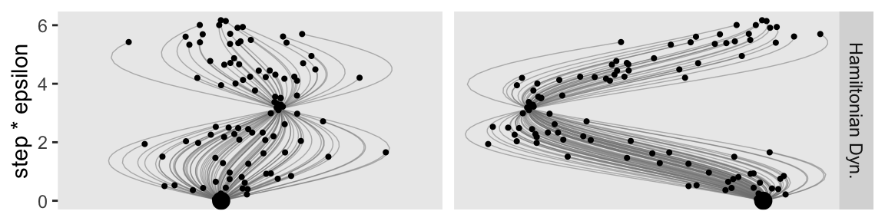
Here’s the bottom row.
p4 <- d_proposal |>
group_by(cur_pos, seed) |>
slice_max(step) |>
ggplot(aes(x = proposal, y = after_stat(density))) +
geom_histogram(binwidth = 1/3, boundary = 0, fill = "gray67") +
xlab(expression(theta)) +
coord_cartesian(xlim = c(-3, 3)) +
facet_grid("HMC Proposals" ~ cur_pos) +
theme(strip.text.x = element_blank())
p4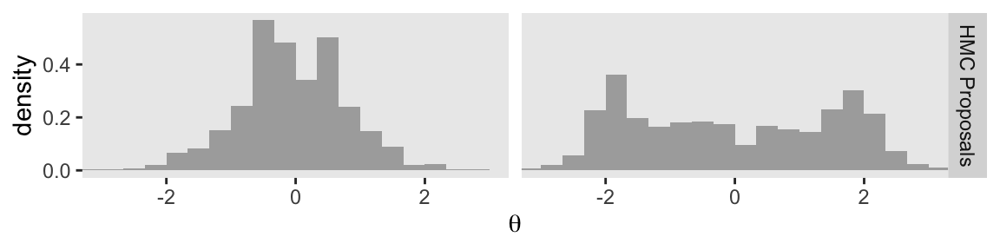
Now we combine the four plot objects with patchwork syntax to make the full version of Figure 14.2.
p1 / p2 / p3 / p4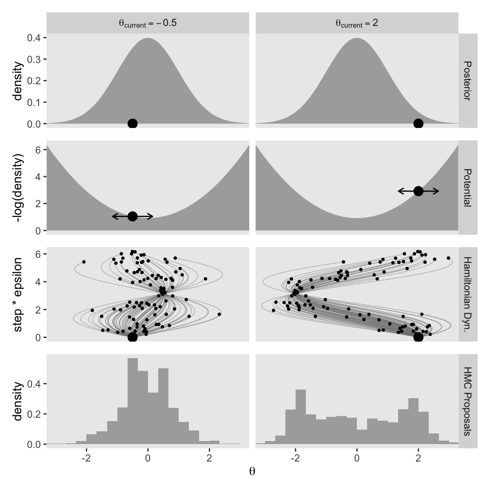
At the top of page 404, we read:
The step size controls the smoothness or jaggedness of the trajectory. The overall duration, Steps∗Eps, controls how far the proposal ventures from the current position. This duration is important to tune, because we want the proposal to be closer to a mode, without overshooting, and without rolling all the way back to the starting point. Figure 14.2 shows a wide range of trajectories for the same starting positions as Figure 14.1. Notice that the long trajectories overshoot the mode and return to the current position. To prevent inefficiencies that would arise from letting the trajectories make a U-turn, Stan incorporates an algorithm that generalizes the notion of U-turn to high-dimensional parameter spaces and estimates when to stop the trajectories before they make a U-turn back toward the starting position.
When we changed our non-linear function to allow for a wider range of l values, conditional on the epsilon values, that results in proposal distributions composed of some impulses that were too brief to optimally venture to the posterior mode (i.e., those near the bottom of the step * epsilon axis), and others that were too long and ended up U-turning (i.e., those near the top of the step * epsilon axis). It’s probably best if we leave these decisions up to Stan, rather than fiddling with them ourselves.
14.1.3 Figure 14.3
In the next paragraph of page 404, we read:
Other than step size and number of steps, there is a third tuning knob on the proposal distribution, namely, the standard deviation of the distribution from which the initial momentum is selected.
Kruschke designed Figure 14.3 to highlight that knob. So far within our d data frame, we have been setting p_sd to a constant value of 1. This time we’ll set that to two values: 0.5 and 2. To compensate, we will hold the cur_pos column constant at 2. Here’s the new d data frame and the first row of the figure.
# These three lines are the same as before
d <- tibble(theta = seq(from = -3.3, to = 3.3, by = 0.05)) |>
mutate(density = dnorm(theta, mean = 0, sd = 1),
neg_log_density = -dnorm(theta, mean = 0, sd = 1, log = TRUE)) |>
# These three lines are new
expand_grid(p_sd = c(0.5, 2)) |>
mutate(p_sd_parse = str_c("Proposal~italic(SD)==", p_sd),
cur_pos = 2)
glimpse(d)Rows: 266
Columns: 6
$ theta <dbl> -3.30, -3.30, -3.25, -3.25, -3.20, -3.20, -3.15, -3.15, -3.10, -3.10, -3.05, -3.05, -3.00, -3.00, -2.95,…
$ density <dbl> 0.001722569, 0.001722569, 0.002029048, 0.002029048, 0.002384088, 0.002384088, 0.002794258, 0.002794258, …
$ neg_log_density <dbl> 6.363939, 6.363939, 6.200189, 6.200189, 6.038939, 6.038939, 5.880189, 5.880189, 5.723939, 5.723939, 5.57…
$ p_sd <dbl> 0.5, 2.0, 0.5, 2.0, 0.5, 2.0, 0.5, 2.0, 0.5, 2.0, 0.5, 2.0, 0.5, 2.0, 0.5, 2.0, 0.5, 2.0, 0.5, 2.0, 0.5,…
$ p_sd_parse <chr> "Proposal~italic(SD)==0.5", "Proposal~italic(SD)==2", "Proposal~italic(SD)==0.5", "Proposal~italic(SD)==…
$ cur_pos <dbl> 2, 2, 2, 2, 2, 2, 2, 2, 2, 2, 2, 2, 2, 2, 2, 2, 2, 2, 2, 2, 2, 2, 2, 2, 2, 2, 2, 2, 2, 2, 2, 2, 2, 2, 2,…Now we make the top row.
p1 <- d |>
ggplot(aes(x = theta, y = density)) +
geom_area(fill = "grey67") +
geom_point(data = d |>
filter(near(theta, cur_pos)),
y = 0, size = 3.5) +
scale_x_continuous(NULL, breaks = NULL) +
coord_cartesian(xlim = c(-3, 3)) +
facet_grid("Posterior" ~ p_sd_parse,
labeller = labeller(.cols = label_parsed))
p1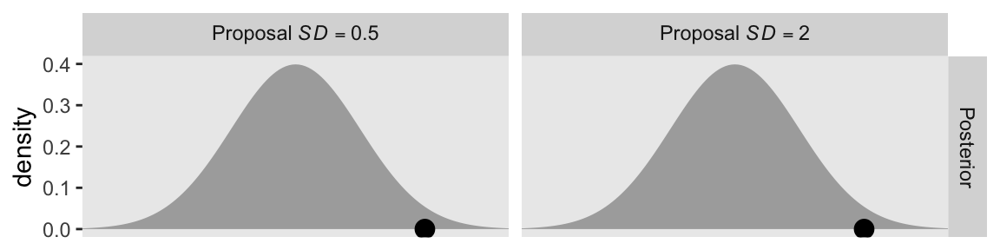
This is the first time the panels in the top row are the same in the two columns. We start to see the changes in the second row.
p2 <- d |>
ggplot(aes(x = theta, y = neg_log_density)) +
geom_area(fill = "grey67") +
geom_point(data = d |>
filter(near(theta, cur_pos)),
size = 3.5) +
geom_line(data = d |>
filter(near(theta, cur_pos)) |>
expand_grid(row = 1:2) |>
mutate(theta = theta + c(-1, 1) * 0.65 * p_sd),
arrow = arrow(length = unit(0.075, "inches"), ends = "both"),
linewidth = 0.5) +
scale_x_continuous(NULL, breaks = NULL) +
ylab("-log(density)") +
coord_cartesian(xlim = c(-3, 3)) +
facet_grid("Potential" ~ p_sd) +
theme(strip.text.x = element_blank())
p2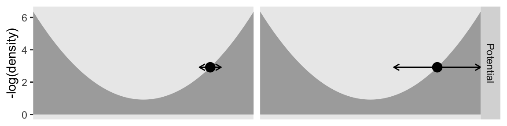
Even though the values on the x and y axes are the same by column, the widths of the horizontal arrows are different. Though both dots will be given synthetic flicks drawn from rnorm(), the settings in the left column will be rnorm(n = 1, mean = 0, sd = 0.5), and those in the right column will be norm(n = 1, mean = 0, sd = 2). Now we realize those settings with our updated version of the d_proposal data frame.
d_proposal <- tibble(seed = 1:n_impulse,
epsilon = runif(n = n_impulse, min = 0.005, max = 0.195)) |>
# This line is back to the original settings
mutate(l = runif(n = n_impulse, min = 1 / epsilon, max = pi / (2 * epsilon)) |> ceiling(),
# `cur_pos` is now a constant
cur_pos = 2) |>
# Now differentiate by `p_sd`
expand_grid(p_sd = c(0.5, 2)) |>
# Feed all 5 columns into propose_hmc()
mutate(hmc = pmap(.l = list(seed, epsilon, l, cur_pos, p_sd), .f = propose_hmc)) |>
unnest(hmc)Here is the third row.
p3 <- d_proposal |>
filter(seed <= 100) |>
ggplot(aes(x = proposal, y = step * epsilon, group = seed)) +
geom_path(alpha = 1/2, color = "grey50", linewidth = 1/4) +
geom_point(data = d_proposal |>
filter(seed <= 100) |>
group_by(cur_pos, seed) |>
slice_max(step),
size = 3/4) +
geom_point(data = d_proposal |>
filter(seed <= 100) |>
group_by(p_sd) |>
slice(1),
size = 3.5) +
scale_x_continuous(NULL, breaks = NULL) +
coord_cartesian(xlim = c(-3, 3)) +
facet_grid("Hamiltonian Dyn." ~ p_sd) +
theme(strip.text.x = element_blank())
p3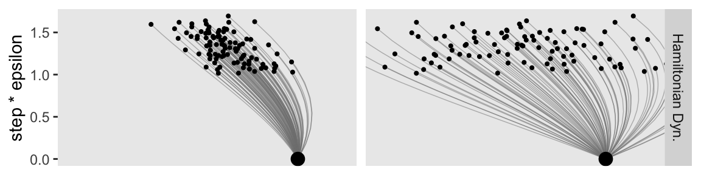
Now make the final fourth row.
p4 <- d_proposal |>
group_by(cur_pos, seed) |>
slice_max(step) |>
ggplot(aes(x = proposal, y = after_stat(density))) +
geom_histogram(binwidth = 1/3, boundary = 0, fill = "gray67") +
xlab(expression(theta)) +
coord_cartesian(xlim = c(-3, 3)) +
facet_grid("HMC Proposals" ~ p_sd) +
theme(strip.text.x = element_blank())
p4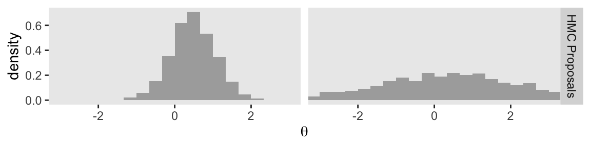
Combine the four plot objects to display the full version of our Figure 14.3.
p1 / p2 / p3 / p4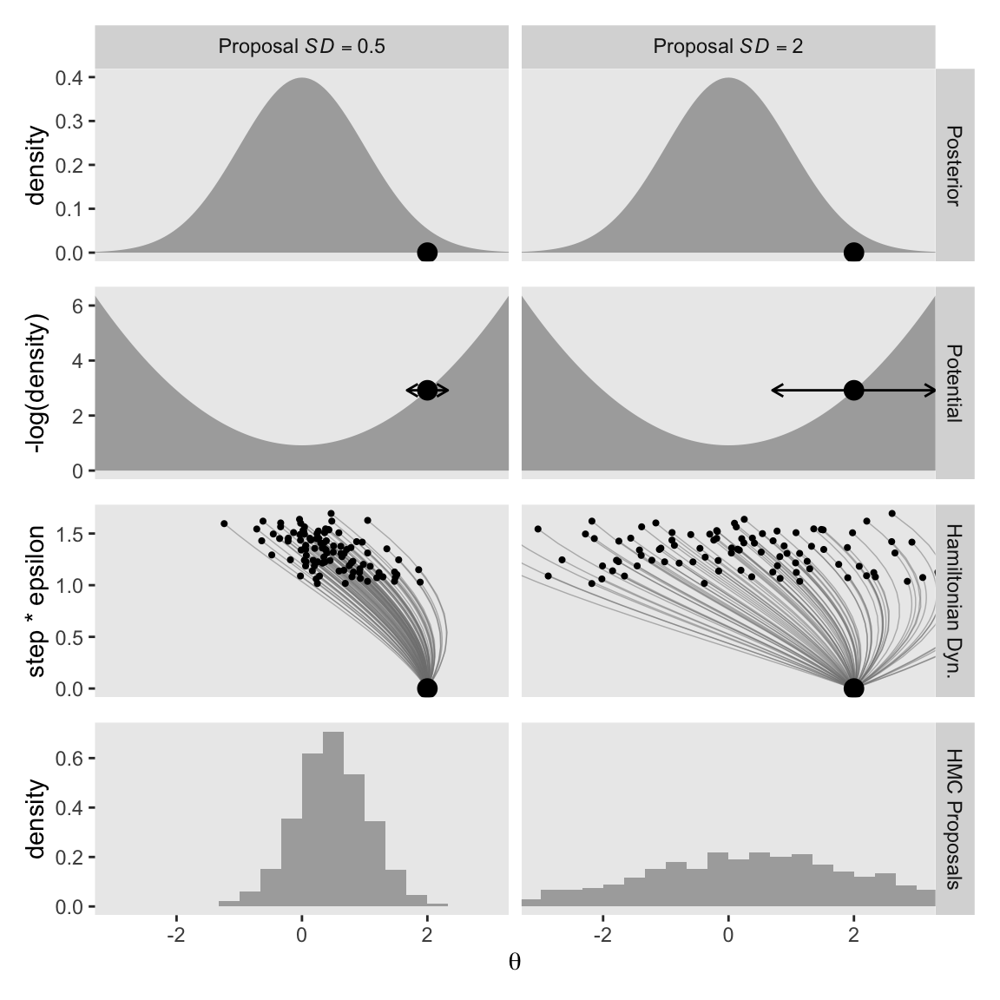
You can see that when the standard deviation of the momentum distribution is wider, the proposal distribution is wider. As you can see by comparing Figures 14.1 and 14.3, the most efficient standard deviation is not too wide and not too narrow. The standard deviation of the momentum distribution is typically set by adaptive algorithms in Stan to match the standard deviation of the posterior. (p. 404)
14.1.4 Figure triathalon wrap-up
It bears repeating that the propose_hmc() function we used in the last three subsections is not a complete HMC sampler. It’s just designed to showcase some of the details of the proposal stage. Kruschke gave some of the other details in HMC sampling on page 403:
Once the proposed jump is established, then the proposal is accepted or rejected according to the Metropolis decision rule as in Equation 7.1, p. 151, except that the terms involve not only the relative posterior density, but also the momentum at the current and proposed positions. The initial momentum applied at the current position is drawn randomly from a simple probability distribution such as a normal (Gaussian). Denote the momentum as \(\phi\). Then the Metropolis acceptance probability for HMC becomes
\[ p_\text{accept} = \min \left( \frac{ p(\theta_\text{proposed} \mid D) \; p(\phi_\text{proposed}) }{ p(\theta_\text{current} \mid D) \; p(\phi_\text{current}) }, 1 \right) \]
We’ve completely skipped that \(p_\text{accept}\) stage in this section. But don’t worry. Since we’ll be using Stan (mainly via brms) for our HMC models in this ebook, those details are all handled for us.
If you’d like to learn more about the details of HMC sampling, you might check out McElreath’s lecture on HMC from January, 2019 or one of these lectures (here, here, or here) by Michael Betancourt. Also, McElreath showed how to make a fully-functional (though special case) HMC sample in Chapter 9 of his (2020) textbook.
14.2 Installing Stan
You can learn about installing Stan at https://mc-stan.org/users/interfaces/. We, of course, have already been working with Stan via brms. Bürkner has some nice information on how to install brms in the FAQ section of the brms GitHub repository.
To install the latest official release from CRAN, execute install.packages("brms"). If you’d like to install the current developmental version, you can execute the following.
if (!requireNamespace("remotes")) {
install.packages("remotes")
}
remotes::install_github("paul-buerkner/brms")As Kruschke advised, it’s a good idea to “be sure that your versions of R and RStudio are up to date” (p. 407) when installing brms and/or Stan.
People sometimes have difficulties installing Stan or brms after a they perform a software update. If you find yourself in that position, browse through some of the threads on the Stan forums at https://discourse.mc-stan.org/.
14.3 A Complete example
If you’d like to learn how to fit models in Stan itself, you might consult the updated versions of the Stan user’s guide and Stan reference manual, which you can find at https://mc-stan.org/users/documentation/. You might also check out the Stan Case studies and other tutorials listed by the Stan team.
We will continue using Stan via brms.
The model Kruschke walked through in this section followed the form
\[\begin{align*} y_i & \sim \operatorname{Bernoulli} (\theta) \\ \theta & \sim \operatorname{Beta} (1, 1), \end{align*}\]
where \(\theta\) is the probability \(y = 1\). Kruschke showed how to simulate the data at the top of page 409. Here’s our tidyverse version.
n <- 50
z <- 10
my_data <- tibble(y = rep(1:0, times = c(z, n - z)))
glimpse(my_data)Rows: 50
Columns: 1
$ y <int> 1, 1, 1, 1, 1, 1, 1, 1, 1, 1, 0, 0, 0, 0, 0, 0, 0, 0, 0, 0, 0, 0, 0, 0, 0, 0, 0, 0, 0, 0, 0, 0, 0, 0, 0, 0, 0, 0, 0, 0…In the absence of predictors, you might think of this as an intercept-only model. You can fit the simple intercept-only Bernoulli model with brms::brm() like this.
fit14.1 <- brm(
data = my_data,
family = bernoulli(link = identity),
y ~ 1,
prior(beta(1, 1), class = Intercept, lb = 0, ub = 1),
iter = 1000, warmup = 200, chains = 3, cores = 3,
seed = 14,
file = "fits/fit14.01")As Kruschke wrote,
iteris the total number of steps per chain, includingwarmupsteps in each chain. Thinning merely marks some steps as not to be used; thinning does not increase the number of steps taken. Thus, the total number of steps that Stan takes ischains·iter. Of those steps, the ones actually used as representative have a total count ofchains·(iter−warmup)/thin. Therefore, if you know the desired total steps you want to keep, and you know the warm-up, chains, and thinning, then you can compute that the necessaryiterequals the desired total multiplied bythin/chains+warmup.We did not specify the initial values of the chains in the example above, instead letting Stan randomly initialize the chains by default. The chains can be initialized by the user with the argument
init, analogous to JAGS. (p. 409)
Unlike what Kruschke showed on page 409, we did not use the thin argument, above, and will generally avoid thinning in this ebook. You just don’t tend to need to thin your chains when using Stan. I do, however, like to use the seed argument. Because computers use pseudorandom number generators to take random draws, I prefer to make my random draws reproducible by setting my seed. Others have argued against this. You do you.
Kruschke mentioned trace plots and model summaries. Here’s our trace plot, which comes with a marginal density plot by brms default.
plot(fit14.1, widths = 2:3)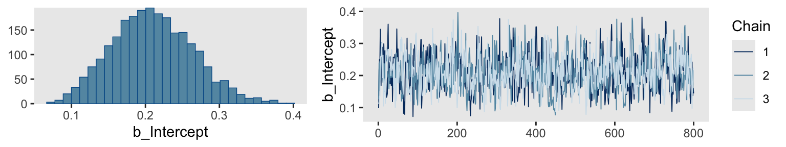
Here’s the summary.
print(fit14.1) Family: bernoulli
Links: mu = identity
Formula: y ~ 1
Data: my_data (Number of observations: 50)
Draws: 3 chains, each with iter = 1000; warmup = 200; thin = 1;
total post-warmup draws = 2400
Regression Coefficients:
Estimate Est.Error l-95% CI u-95% CI Rhat Bulk_ESS Tail_ESS
Intercept 0.21 0.05 0.11 0.32 1.00 789 928
Draws were sampled using sampling(NUTS). For each parameter, Bulk_ESS
and Tail_ESS are effective sample size measures, and Rhat is the potential
scale reduction factor on split chains (at convergence, Rhat = 1).14.3.1 Reusing the compiled model
“Because model compilation can take a while in Stan, it is convenient to store the DSO of a successfully compiled model and use it repeatedly for different data sets” (p. 410). This true for our brms paradigm, too. To reuse a compiled brm() model, we typically use the update() function. To demonstrate, we’ll first want some new data. Here we’ll increase our z value to 20.
z <- 20
my_data <- tibble(y = rep(1:0, times = c(z, n - z)))
glimpse(my_data)Rows: 50
Columns: 1
$ y <int> 1, 1, 1, 1, 1, 1, 1, 1, 1, 1, 1, 1, 1, 1, 1, 1, 1, 1, 1, 1, 0, 0, 0, 0, 0, 0, 0, 0, 0, 0, 0, 0, 0, 0, 0, 0, 0, 0, 0, 0…For the first and most important argument, you need to tell update() what fit you’re reusing. We’ll use fit14.1. You also need to tell update() about your new data with the newdata argument. Because the model formula and priors are the same as before, we don’t need to use those arguments, here.
fit14.2 <- update(
fit14.1,
newdata = my_data,
iter = 1000, warmup = 200, chains = 3, cores = 3,
seed = 14,
file = "fits/fit14.02")Here’s the summary using the fixef() function.
fixef(fit14.2) Estimate Est.Error Q2.5 Q97.5
Intercept 0.4035677 0.06494748 0.2743692 0.532682914.3.2 General structure of Stan model specification
“The general structure of model specifications in Stan consist of six blocks” (p. 410). We don’t need to worry about this when using brms. Just use the brm() and update() functions. But if you’re curious about what the underlying Stan code is for your brms models, index the model fit with $model.
fit14.2$model// generated with brms 2.23.0
functions {
}
data {
int<lower=1> N; // total number of observations
array[N] int Y; // response variable
int prior_only; // should the likelihood be ignored?
}
transformed data {
}
parameters {
real<lower=0,upper=1> Intercept; // temporary intercept for centered predictors
}
transformed parameters {
// prior contributions to the log posterior
real lprior = 0;
lprior += beta_lpdf(Intercept | 1, 1);
}
model {
// likelihood including constants
if (!prior_only) {
// initialize linear predictor term
vector[N] mu = rep_vector(0.0, N);
mu += Intercept;
target += bernoulli_lpmf(Y | mu);
}
// priors including constants
target += lprior;
}
generated quantities {
// actual population-level intercept
real b_Intercept = Intercept;
}14.3.3 Think log probability to think like Stan
The material in this subsection is outside of the scope of this ebook.
14.3.4 Sampling the prior in Stan
“There are several reasons why we might want to examine a sample from the prior distribution of a model” (p. 413). Happily, we can do this with brms with the sample_prior argument in the brm() function. By default, it is set to "no" and does not take prior samples. If you instead set sample_prior = "yes" or sample_prior = TRUE, samples are drawn solely from the prior.
Here’s how to do that with an updated version of the model from fit14.2.
fit14.3 <- brm(
data = my_data,
family = bernoulli(link = identity),
y ~ 1,
prior(beta(1, 1), class = Intercept, lb = 0, ub = 1),
iter = 1000, warmup = 200, chains = 3, cores = 3,
sample_prior = "yes",
seed = 14,
file = "fits/fit14.03")Now we can gather the prior draws with the prior_draws() function.
prior_draws(fit14.3) |>
head() Intercept
1 0.2593548
2 0.1327571
3 0.2968221
4 0.4340424
5 0.3570039
6 0.4815478Here’s a look at the prior distribution.
prior_draws(fit14.3) |>
ggplot(aes(x = Intercept)) +
geom_histogram(binwidth = 0.1, boundary = 0) +
scale_y_continuous(NULL, breaks = NULL) +
labs(x = expression(italic(p)(theta)),
title = expression("Beta"*(1*", "*1)))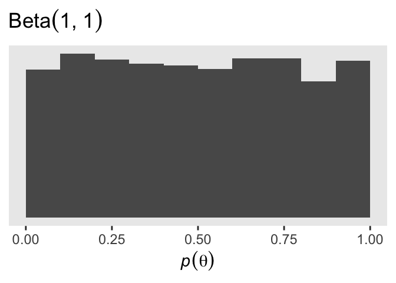
14.3.5 Simplified scripts for frequently used analyses
This is not our approach when using brms. Throughout the chapters of this ebook, we will learn to make skillful use of the brms::brm() function to fit all our models. Once in a while we’ll take a shortcut and reuse a precompiled fit with update().
14.4 Specify models top-down in Stan
For humans, descriptive models begin, conceptually, with the data that are to be described. We first know the measurement scale of the data and their structure. Then we conceive of a likelihood function for the data. The likelihood function has meaningful parameters, which we might want to re-express in terms of other data (called covariates, predictors, or regressors). Then we build a meaningful hierarchical prior on the parameters. Finally, at the top level, we specify constants that express our prior knowledge, which might be vague or noncommittal. (p. 414)
If you look at how I typically organize the arguments within brms::brm(), you’ll see this is generally the case there, too. Take another look at the code for fit14.1:
fit14.1 <- brm(
data = my_data,
family = bernoulli(link = identity),
y ~ 1,
prior(beta(1, 1), class = Intercept, lb = 0, ub = 1),
iter = 1000, warmup = 200, chains = 3, cores = 3,
seed = 14,
file = "fits/fit14.01")The first line within brm() defined the data. The second line defined the likelihood function and its link function. We haven’t talked much about link functions, yet, but that will start in Chapter 15. Likelihoods contain parameters and our third line within brm() defined the equation we wanted to use to predict/describe our parameter of interest, \(\theta\). We defined our sole prior in the fourth line. The remaining arguments contain the unsexy technical specifications, such as how many MCMC chains we’d like to use and into what folder we’d like to save our fit as an external file.
You do not need to arrange brm() arguments this way. For other arrangements, take a look at the examples in the brms reference manual or in some of Bürkner’s vignettes, such as his Estimating multivariate models with brms (2022b). However you go about fitting your models with brm(), I mainly recommend you find a general style and stick with it. Standardizing your approach will make your code more readable for others and yourself.
14.5 Limitations and extras
At the time of this writing, one of the main limitations of Stan is that it does not allow discrete (i.e., categorical) parameters. The reason for this limitation is that Stan has HMC as its foundational sampling method, and HMC requires computing the gradient (i.e., derivative) of the posterior distribution with respect to the parameters. Of course, gradients are undefined for discrete parameters. (p. 415)
To my knowledge this is still the case, which means brms has this limitation, too. As wildly powerful as it is, brms it not as flexible as working directly with Stan. However, Bürkner and others are constantly expanding its capabilities. Probably the best places keep track of the new and evolving features of brms are the issues and news sections in its GitHub repo, https://github.com/paul-buerkner/brms.
14.5.1 Bonus: More Stan resources
Though we won’t spend much more time discussing Stan directly in this book, I have a few more resources to share:
- You can find a Materials for thoroughly understanding Stan thread on the Stan forums, which has a few useful resources.
- I have released a few blog posts walking out the Stan code underlying a few simple brms models, the first post of which you can find here.
- I have a sister companion to my brms translation of McElreath’s 2nd edition that features rstan, which you can find at https://solomon.quarto.pub/sr2rstan/.
Session info
sessionInfo()R version 4.5.1 (2025-06-13)
Platform: aarch64-apple-darwin20
Running under: macOS Ventura 13.4
Matrix products: default
BLAS: /Library/Frameworks/R.framework/Versions/4.5-arm64/Resources/lib/libRblas.0.dylib
LAPACK: /Library/Frameworks/R.framework/Versions/4.5-arm64/Resources/lib/libRlapack.dylib; LAPACK version 3.12.1
locale:
[1] en_US.UTF-8/en_US.UTF-8/en_US.UTF-8/C/en_US.UTF-8/en_US.UTF-8
time zone: America/Chicago
tzcode source: internal
attached base packages:
[1] stats graphics grDevices utils datasets methods base
other attached packages:
[1] brms_2.23.0 Rcpp_1.1.0 patchwork_1.3.2 lubridate_1.9.4 forcats_1.0.1 stringr_1.6.0 dplyr_1.1.4
[8] purrr_1.2.0 readr_2.1.5 tidyr_1.3.1 tibble_3.3.0 ggplot2_4.0.1 tidyverse_2.0.0
loaded via a namespace (and not attached):
[1] Rdpack_2.6.4 gridExtra_2.3 inline_0.3.21 sandwich_3.1-1 rlang_1.1.6
[6] magrittr_2.0.4 multcomp_1.4-29 matrixStats_1.5.0 compiler_4.5.1 loo_2.8.0
[11] vctrs_0.6.5 reshape2_1.4.4 pkgconfig_2.0.3 fastmap_1.2.0 backports_1.5.0
[16] labeling_0.4.3 threejs_0.3.4 promises_1.3.3 rmarkdown_2.30 markdown_2.0
[21] tzdb_0.5.0 nloptr_2.2.1 xfun_0.53 jsonlite_2.0.0 later_1.4.4
[26] parallel_4.5.1 R6_2.6.1 dygraphs_1.1.1.6 stringi_1.8.7 RColorBrewer_1.1-3
[31] StanHeaders_2.32.10 boot_1.3-31 estimability_1.5.1 rstan_2.32.7 knitr_1.50
[36] zoo_1.8-14 base64enc_0.1-3 bayesplot_1.14.0 httpuv_1.6.16 Matrix_1.7-3
[41] splines_4.5.1 igraph_2.2.0 timechange_0.3.0 tidyselect_1.2.1 rstudioapi_0.17.1
[46] abind_1.4-8 yaml_2.3.10 codetools_0.2-20 miniUI_0.1.2 curl_7.0.0
[51] pkgbuild_1.4.8 lattice_0.22-7 plyr_1.8.9 shiny_1.11.1 withr_3.0.2
[56] bridgesampling_1.1-2 S7_0.2.1 posterior_1.6.1 coda_0.19-4.1 evaluate_1.0.5
[61] survival_3.8-3 RcppParallel_5.1.11-1 xts_0.14.1 pillar_1.11.1 tensorA_0.36.2.1
[66] checkmate_2.3.3 DT_0.34.0 stats4_4.5.1 reformulas_0.4.1 shinyjs_2.1.0
[71] distributional_0.5.0 generics_0.1.4 hms_1.1.4 rstantools_2.5.0 scales_1.4.0
[76] minqa_1.2.8 gtools_3.9.5 xtable_1.8-4 glue_1.8.0 emmeans_1.11.2-8
[81] tools_4.5.1 shinystan_2.6.0 lme4_1.1-37 colourpicker_1.3.0 mvtnorm_1.3-3
[86] grid_4.5.1 rbibutils_2.3 QuickJSR_1.8.1 crosstalk_1.2.2 colorspace_2.1-2
[91] nlme_3.1-168 cli_3.6.5 Brobdingnag_1.2-9 V8_8.0.1 gtable_0.3.6
[96] digest_0.6.37 TH.data_1.1-4 htmlwidgets_1.6.4 farver_2.1.2 htmltools_0.5.8.1
[101] lifecycle_1.0.4 mime_0.13 rstanarm_2.32.2 shinythemes_1.2.0 MASS_7.3-65
Comments